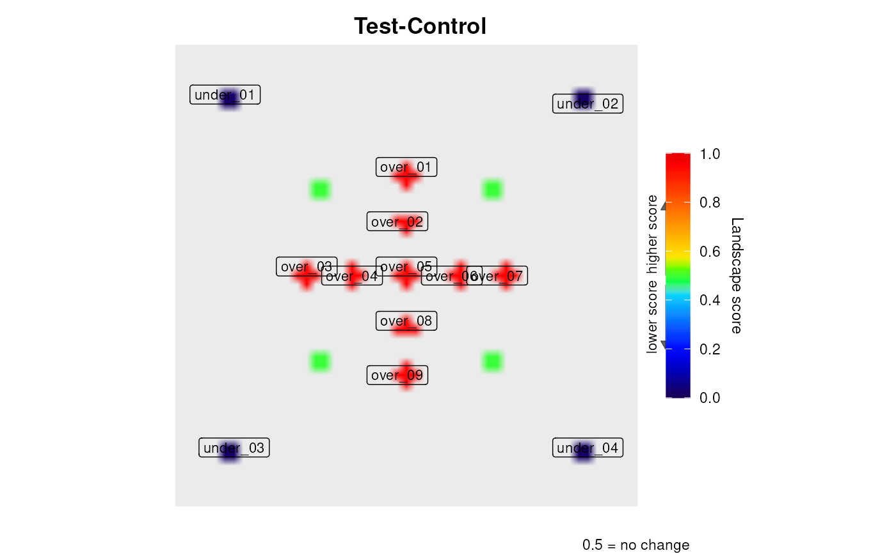

Compact summary of the object returned by levi:
the comparison, how many nodes were scored, the strongest and weakest genes,
the peaks and valleys detected, and whether a permutation test was run.
# S3 method for class 'levi_result'
print(x, n = 3L, ...)A levi_result object, as returned by levi.
Integer. How many genes to list at each end of the ranking. Default is 3.
Ignored, present for compatibility with the generic.
x, invisibly. Called for the summary it prints.
The landscape plot is drawn by levi itself, so this
method prints text only and never redraws the figure. Use x$plot to
get the ggplot object back.
hub_n <- system.file("extdata", "hub_network.dat", package = "levi")
hub_e <- system.file("extdata", "hub_expression.dat", package = "levi")
res <- levi(networkCoordinatesInput = hub_n,
expressionInput = hub_e,
fileTypeInput = "dat",
geneSymbolInput = "ID",
readExpColumn = readExpColumn("Test-Control"),
resolutionValueInput = 10,
smoothValueInput = 5)

res
#> levi landscape: Test-Control
#> nodes scored: 9 | grid: 2601 cells, 97% background
#> score range: 0.024 to 0.952 (0.5 = no change)
#> highest: HUB (0.952), N1 (0.952), N2 (0.952)
#> lowest: N8 (0.024), N7 (0.024), N6 (0.024)
#> peaks: 5 peak(s), 4 valley(s)
#> regions: 9 over, 4 under (threshold 0.100; min 3 cells)
#> permutation test: not run (n_perm = 0)
#> fields: comparison, landscape, scores, peaks, regions, pvalues, plot, plot3d, raw_pvalues, metadata